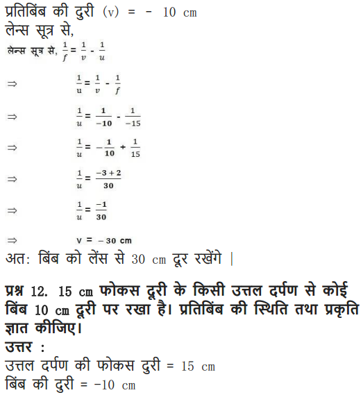
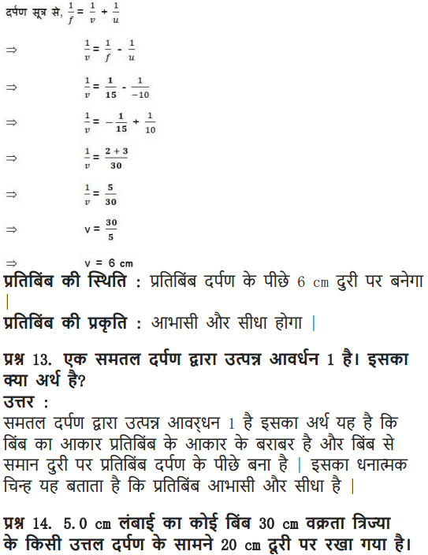
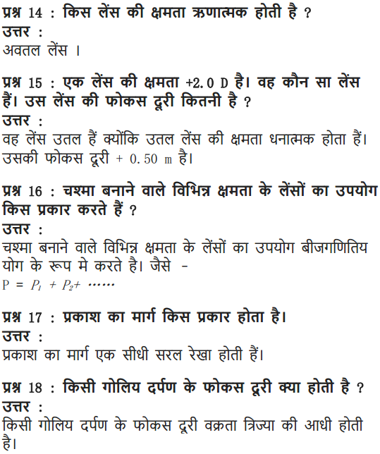

NCERT Solutions For Class 10 Science Chapter 10 Light Reflection and Refraction: In this article, you candidates can find light reflection and refraction class 10 NCERT solutions. Working on the light chapter of class 10 NCERT solutions will help candidates to build a strong foundation over the subject Physics. Knowing light reflection and refraction class 10 questions and answers will help students of class 10 to bag a decent score in class 10 board exams as well.
Along with NCERT Solutions For Class 10 Science Chapter 10 Light Reflection and Refraction candidates can also find light reflection and refraction class 10 numericals questions in this article. Go through them will help candidates get a clear idea about how to approach the problems which in turn helps you to solve them in the most efficient way. So why wait? Read on to find out everything about light reflection and refraction class 10 important questions with answers here.
NCERT Solutions for Class 10 Science Chapter 10 Light Reflection and Refraction
Before getting into the details of NCERT Solutions For Class 10 Science Chapter 10 Light Reflection and Refraction, let’s have an overview of topics and subtopics under NCERT class 10 science book activities solutions chapter 10:
- Light – Reflection And Refraction
- Reflection Of Light
- Spherical Mirrors
- Refraction Of Light
Free download NCERT Solutions for Class 10 Science Chapter 10 Light Reflection and Refraction PDF in Hindi Medium as well as in English Medium for CBSE, Uttarakhand, Bihar, MP Board, Gujarat Board, and UP Board students, who are using NCERT Books based on updated CBSE Syllabus for the session 2019-20.
- प्रकाश-परावर्तन एवं अपवर्तन कक्षा 10 विज्ञान हिंदी में
- Class 10 Light Reflection and Refraction Important Questions
- Light Reflection and Refraction Class 10 Notes
- Light Reflection and Refraction NCERT Exemplar Solutions
- Class 10 Science Light Reflection and Refraction Mind Map
NCERT Solutions for Class 10 Science Chapter 10 Intext Questions
Page Number: 168
Question 1
Define the principal focus of a concave mirror.
Answer:
The principal focus of a concave mirror is a point on its principal axis to which all the light rays which are parallel and close to the axis, converge after reflection from the concave mirror.
Question 2
The radius of curvature of a spherical mirror is 20 cm. What is its focal length?
Answer:
Focal length = \(\frac { 1 }{ 2 }\) x Radius of curvature = \(\frac { 1 }{ 2 }\) x 20 cm = 10 cm
Question 3
Name a mirror that can give an erect and enlarged image of an object.
Answer:
Concave mirror.
Question 4
Why do we prefer a convex mirror as a rear-view mirror in vehicles ?
Answer:
We prefer a convex mirror as a rear-view mirror in vehicles because of two reasons :
- A convex mirror always produces an erect image of the objects.
- The image formed in a convex mirror is highly diminished or much smaller than the object, due to which a convex mirror gives a wide field of view of the traffic behind. A convex mirror enables the driver to view such larger area of the traffic behind him.
Page Number: 171
Question 1
Find the focal length of a convex mirror whose radius of curvature is 32 cm.
Solution:
R = +32 cm and \(f=\frac { R }{ 2 } =+\frac { 32 }{ 2 } =+16cm\)
Question 2
A concave mirror produces three times magnified (enlarged) real image of an object placed at 10 cm in front of it. Where is the image located ?
Solution:
Because the image is real, so magnification m must be negative.

Thus the image is located at a distance of 30 cm from the mirror on the object side of the mirror.
Page Number: 176
Question 1
A ray of light travelling in air enters obliquely into water. Does the light ray bend towards the normal or away from the normal ? Why ?
Answer:
The light-ray bends towards the normal because the ray of light goes from a rarer medium to a denser medium.
Question 2
Light enters from air to glass having refractive index 1.50. What is the speed of light in the glass ? The speed of light in vacuum is 3 x 108 ms-1.
Solution:
Refractive index of glass, n8 = 1.50

Question 3
Find out, from Table 10.3, the medium having highest optical density. Also find the medium with lowest optical density.
Answer:
From table 10.3, diamond has highest refractive index (= 2.42), so it has highest optical density.
Air has lowest refractive index (= 1.0003),
so it has lowest optical density.
Question 4
You are given kerosene, turpentine and water. In which of these does the light travel fastest ? Use the information given in Table 10.3.
Answer:
For kerosene, n = 1.44
For turpentine, n = 1.47
For water, n = 1.33
Because water has the lowest refractive index, therefore light travels fastest in this optically rarer medium than kerosene and turpentine oil.
Question 5
The refractive index of diamond is 2.42. What is the meaning of this statement?
Answer:
By saying that the refractive index of diamond is 2.42, we mean that the speed of light in diamond is lower by a factor of 2.42 relative to that in vacuum.
Page Number: 184
Question 1
Define 1 dioptre of power of a lens.
Answer:
One dioptre is the power of a lens whose focal length is 1 metre.
Question 2
A convex lens forms a real and inverted image of a needle at a distance of 50 cm from it. Where is the needle placed in front of the convex lens if the image is equal to the size of the object ? Also, find the power of the lens. , Sol. Here, u — +50 cm ..
Solution:
Here ν = +50cm
Because the real image is of the same size as the object,

Question 3
Find the power of a concave lens of focal length 2 m.
Solution:
Because the focal length of a concave lens is negative,
therefore f = -2 m

NCERT Solutions for Class 10 Science Chapter 10 Textbook Chapter End Questions
Question 1
Which one of the following materials cannot be used to make a lens ?
(a) Water
(b) Glass
(c) Plastic
(d) Clay
Answer:
(d) Clay
Question 2
The image formed by a concave mirror is observed to be virtual, erect and larger than the object. Where should be the position of the object ?
(a) Between the principal focus and the centre of curvature
(b) At the centre of curvature
(c) Beyond the centre of curvature
(d) Between the pole of the mirror and its principal focus.
Answer:
(d) Between the pole of the mirror and its principal focus.
Question 3
Where should an object be placed in front of a convex lens to get a real image of the size of the object ?
(a) At the principal focus of the lens (b) At twice the focal length
(c) At infinity
(d) Between the optical centre of the lens and its principal focus.
Answer:
(b) At twice the focal length.
Question 4
A spherical mirror and a thin spherical lens have each a focal length of -15 cm. The mirror and the lens are likely to be :
(a) Both concave.
(b) Both convex.
(c) the mirror is concave and the lens is convex.
(d) the mirror is convex, but the lens is concave.
Answer:
(a) Both concave
Question 5
No matter how far you stand from mirror, your image appears erect. The mirror is likely to be
(a) plane
(b) concave
(c) convex
(d) either plane or convex.
Answer:
(d) Either plane or convex.
Question 6
Which of the following lenses would you prefer to use while reading small letters found in a dictionary ?
(a) A convex lens of focal length 50 cm.
(b) A concave lens of focal length 50 cm.
(c) A convex lens of focal length 5 cm.
(d) A concave lens of focal length 5 cm.
Answer:
(c) A convex lens of focal length 5 cm.
Question 7
We wish to obtain an erect image of an object, using a concave mirror of focal length 15 cm. What should be the range of distance of the object from the mirror ? What is the nature of the image ? Is the image larger or smaller than the object ? Draw a ray diagram to show the image formation in this case.
Answer:
A concave mirror gives an erect image when the object is placed between the focus F and the pole P of the concave mirror, i.e., between 0 and 15 cm from the mirror. The image thus formed will be virtual, erect and larger than the object.
Question 8
Name the type of mirror used in the following situations.
(a) Headlights of a car.
(b) Side/rear-view mirror of a vehicle.
(c) Solar furnace.
Support your answer with reason.
Answer:
(a) Concave mirrors are used as reflectors in headlights of cars. When a bulb is located at the focus of the concave mirror, the light rays after reflection from the mirror travel over a large distance as a parallel beam of high intensity.
(b) A convex mirror is used as a side/rear-view mirror of a vehicle because
- A convex mirror always forms an erect, virtual and diminished image of an object placed anywhere in front it.
- A convex mirror has a wider field of view than a plane mirror of the same size.
(c) Large concave mirrors are used to concentrate sunlight to produce heat in solar furnaces.
Question 9
One-half of a convex lens is covered with a black paper. Will this lens produce a complete image of the object ? Verify your answer experimentally. Explain your observations.
Answer:
A convex lens forms complete image of an object, even if its one half is covered with black paper. It can be explained by considering following two cases.
Case I : When the upper half of the lens is covered
In this case, a ray of light coming from the object will be refracted by the lower half of the lens. These rays meet at the other side of the lens to form the image of the given object, as shown in the following figure.
Case II: When the lower half of the lens Is covered
In this case, a ray of light coming from the object is refracted by the upper half of the lens. These rays meet at the other side of the lens to form the image of the given object, as shown in the given figure.
Question 10
An object 5 cm in length is held 25 cm away from a converging lens of focal length 10 cm. Draw the ray diagram and find the position, size and the nature of the image formed.
Answer:
Here : Object distance, u= -25 cm,
Object height, h = 5 cm,
Focal length, f = +10 cm
According to the lens formula, \(\frac { 1 }{ f } =\frac { 1 }{ \nu } -\frac { 1 }{ u }\) , we have
⇒ \(\frac { 1 }{ \nu } =\frac { 1 }{ f } -\frac { 1 }{ u } =\frac { 1 }{ 10 } -\frac { 1 }{ 25 } =\frac { 15 }{ 250 } \quad or\quad \nu =\frac { 250 }{ 15 } =16.66cm\)
The positive value of v shows that the image is formed at the other side of the lens.

The negative value of image height indicates that the image formed is inverted.
The position, size, and nature of image are shown alongside in the ray diagram.

Question 11
A concave lens of focal length 15 cm forms an image 10 cm from the lens. How far is the object placed from the lens ? Draw the ray diagram.
Solution:
Focal length, f = -15 cm, Image distance, ν = -10 cm (as concave lens forms the image on the same side of the lens)
From the lens formula \(\frac { 1 }{ f } =\frac { 1 }{ \nu } -\frac { 1 }{ u }\) , we have

Object distance, u = -30 cm
The negative value of u indicates that the object is placed in front of the lens.
Question 12
An object is placed at a distance of 10 cm from a convex mirror of focal length 15 cm. Find the position and nature of the image.
Solution:
Object distance, u = -10 cm, Focal length, f = +15 cm, Image distance, ν = ?

Thus, image distance, ν = + 6 cm
Because ν is +ve, so a virtual image is formed at a distance of 6 cm behind the mirror.
Magnification, \(m=\frac { -\upsilon }{ u } =\frac { -6 }{ -30 } =\frac { 1 }{ 5 }\) (i.e. < 1)
The positive value of m shows that image erect and its value, which is less than 1, shows that image is smaller than the object. Thus, image is virtual, erect and diminished.
Question 13
The magnification produced by a plane mirror is +1. What does this mean ?
Answer:
Since magnification, \(m=\frac { { h }^{ ‘ } }{ h } =\frac { -\nu }{ u }\). Given, m = +1, so h’ = h and ν = -u
(i) m = 1 indicates the size of image is same as that of object.
(ii) positive sign of m indicates that an erect image is formed.
The opposite signs of ν and u indicate that image is formed on the other side of the mirror from where the object is placed i.e., image is formed behind the mirror and thus image formed is virtual.
Question 14
An object 5.0 cm in length is placed at a distance of 20 cm in front of a convex mirror of radius of curvature 30 cm. Find the position of the image, its nature and size.
Solution:
Since object size, h = +5 cm,
object distance, u = -20 cm
and radius of curvature, R = +30 cm

A virtual, erect image of height 2.2 cm is formed behind the mirror at a distance of 8.6 cm from the mirror.
Question 15
An object of size 7.0 cm is placed at 27 cm in front of a concave mirror of focal length 18 cm. At what distance from the mirror should a screen be placed, so that a sharp focussed image can be obtained ? Find the size and the nature of the image.
Answer:
Here, object size, h = +7.0 cm,
object distance, u = -27 cm
and focal length, f = -18 cm
Image distance, ν = ?
and image size, h’ = ?
From the mirror formula, \(\frac { 1 }{ f } =\frac { 1 }{ \nu } -\frac { 1 }{ u }\), we have

The screen should be placed at a distance of 54 cm on the object side of the mirror to obtain a sharp image.

The image is real, inverted and enlarged in size.
Question 16
Find the focal length of a lens of power -2.0 D. What type of lens is this ?
Answer:
Here, P = -2.0 D
The type of lens is concave because the focal length is negative.

Question 17
A doctor has prescribed a corrective lens of power +1.5 D. Find the focal length of the lens. Is the prescribed lens diverging or converging ?
Answer:
Here, P = +1.5 D

Because the focal length is positive, the prescribed lens is converging.
NCERT Solutions for Class 10 Science Chapter 10 Light Reflection and Refraction
Reflection of light by curved surfaces; Images formed by spherical mirrors, center of curvature, principal axis, principal focus, focal length, mirror formula (Derivation not required), magnification.
Refraction; laws of refraction, refractive index.
Refraction of light by spherical lens; Image formed by spherical lenses; Lens formula (Derivation not required); Magnification. Power of a lens;
| Board | CBSE |
| Textbook | NCERT |
| Class | Class 10 |
| Subject | Science |
| Chapter | Chapter 10 |
| Chapter Name | Light Reflection and Refraction |
| Number of Questions Solved | 31 |
| Category | NCERT Solutions |
Formulae Handbook for Class 10 Maths and Science
Page 168
Question 1.
Define the principal focus of a concave mirror?
Answer:
Light rays that are parallel to the principal axis of a concave mirror converge at a specific point on its principal axis after reflecting from the mirror. This point is known as the principal focus of the concave mirror.
Question 2.
The radius of curvature of a spherical mirror is 20 cm. What is its focal length?
Answer:
Radius of curvature, R = 20 cm
Radius of curvature of a spherical mirror = 2 x Focal length (f)
f = R/2 = 20/2 =10cm
More Resources for CBSE Class 10
- NCERT Solutions
- NCERT Solutions for Class 10 Science
- NCERT Solutions for Class 10 Maths
- NCERT Solutions for Class 10 Social
- NCERT Solutions for Class 10 English
- NCERT Solutions for Class 10 Hindi
- NCERT Solutions for Class 10 Sanskrit
- NCERT Solutions for Class 10 Foundation of IT
- RD Sharma Class 10 Solutions
Question 3.
Name the mirror that can give an erect and enlarged image of an object.
Answer:
When an object is placed between the pole and the principal focus of a concave mirror, the image formed is virtual, erect, and enlarged.
Download NCERT Solutions for Class 10 Science Chapter 10 Light Reflection and Refraction PDF
Question 4.
Why do we prefer a convex mirror as a rear-view mirror in vehicles?
Answer:
Convex mirrors give a virtual, erect, and diminished image of the objects placed in front of them. They are preferred as a rear-view mirror in vehicles because they give a wider field of view, which allows the driver to see most of the traffic behind him.
Page 171
Question 1. Find the focal length of a convex mirror whose radius of curvature is 32 cm.
Answer: Radius of curvature, R = 32 cm
Radius of curvature = 2 x Focal length (f)
R = 2f
f = R/2 = 32/2 = 16cm
Hence, the focal length of the given convex mirror is 16 cm.
Question 2.
A concave mirror produces three times magnified (enlarged) real image of object placed at 10 cm in front of it. Where is the image located?
Answer:
Given, u = – 10 cm
Since image is real inverted so, m = -3
m = -v / u
⇒ -3 = -v/ -10
v= – 30 cm
Negative sign indicates the image will be real and image is formed at 30 cm in front of the mirror.
Page: 176
Question 1.
A ray of light travelling in air enters obliquely into water. Does the light ray bend towards the normal or away from the normal? Why?
Answer:
The light ray bends towards the normal. When a ray of light travels from an optically rarer medium to an optically denser medium, it gets bent towards the normal. Since water is optically denser than air, a ray of light travelling from air into the water will bend towards the normal.
Question 2.
Light enters from air to glass having refractive index 1.50. What is the speed of light in the glass? The speed of light in vacuum is 3 × 108 m/s.
Answer:
Refractive index of a medium nm is given by,
Question 3.
Find out, from Table, the medium having highest optical density. Also find the medium with lowest optical density.
Answer:
Highest optical density = Diamond
Lowest optical density = Air
Optical density of a medium is directly related with the refractive index of that medium. A medium which has the highest refractive index will have the highest optical density and vice-versa.
It can be observed from table 10.3 that diamond and air respectively have the highest and lowest refractive index. Therefore, diamond has the highest optical density and air has the lowest optical density
Question 4.
You are given kerosene, turpentine and water. In which of these does the light travel fastest?
Answer:
The light can travel fast through water.
Question 5.
The refractive index of diamond is 2.42. What is the meaning of this statement?
Answer:
Refractive index of a medium nm is related to the speed of light in that medium v by the relation:
Where, c is the speed of light in vacuum/air
The refractive index of diamond is 2.42. This suggests that the speed of light in diamond will reduce by a factor 2.42 compared to its speed in air.
{kind=link}
Page 184
Question 1.
Define one dioptre of power of a lens?
Answer:
One dioptre is the power Of a lens Of focal length 1m.
Power of lens is defined as the reciprocal of its focal length. If P is the power of a lens of focal length F in metres, then
P = 1/ f (in meters)
The S.I. unit of power of a lens is Dioptre. It is denoted by D.
1 dioptre is defined as the power of a lens of focal length 1 metre.
1 D = 1 m−1
Question 2.
A convex lens forms a real and inverted image of a needle at a distance of 50 cm from it. Where is the needle placed in front of the lens if the image is equal to the size of the object? Also find the power of the lens.
Answer:
v = + 50 cm
Since image is real and of same size. The position of image should be double the focal length.
Hence, the object should be at 2f.
V = 2f = 50, f = 25 cm.
Power = 1/f = 100/25 = 4D
Question 3.
Find the power of a concave lens of focal length 2 m.
Answer:

Question 1.
Which one of the following materials cannot be used to make a lens?
(a) Water (b) Glass
(c) Plastic (d) Clay
Answer: (d) Clay
Question 2.
The ¡mage formed by a concave mirror is observed to be virtual, erect and larger than the object. Where should be the position of the object?
(a) Between the principal focus and the centre of Curvature
(b) At the centre of curvature
(c) Beyond the centre of curvature
(d) Between the pole of the mirror and Its principal focus.
Answer: (d) Between the pole of the mirror and its principal focus.
Question 3.
Where should an object b. placed In front of a convex lens to get a real
image of the size of the object?
(a) At the principal focus of the lens
(b) At twice the focal length
(c) At infinity
(d) Between the optical centre of the lens and its principal focus
Answer:
(b) At twice the focal length
Question 4.
A spherical mirror and a thin spherical lens have each a focal length of 15 cm. The mirror and the lens are likely to be:
(a) both concave
(b) both convex
(c) the mirror is concave, but the lens is convex
(d) the mirror is convex, but the lens is concave
Answer:
(a) Both concave.
Question 5.
No matter how far you stand from a mirror, your Image appears erect. The mirror is likely to be
(a) plane
(b) concave
(c) convex
(d) Either plane or convex
Answer:
(d) Either plane or convex.
Question 6.
Which of the following lenses would you prefer to use while reading small letters found ¡n a dictionary?
(a) A convex lens of focal length 50cm
(b) A concave lens of focal length 50cm
(c) A convex lens of focal length 5 cm
(d) A concave lens of focal length 5 cm.
Answer:
(c) A convex lens of focal length 5 cm.
Question 7.
We wish to obtain an erect image of an object, using a concave mirror of focal length 15 cm. what should be the range of distance of the object from the mirror? What is the nature of the image? Is the image larger or smaller than the object? Draw a ray diagram to show the image formation in this
case.
Answer:
We are given the focal length cf the concave mirror as f = -15cm.
For getting an erect image using a concave mirror, the object should be placed at a distance less than the focal length.
i.e. 15 cm from the pole. The image formed will be virtual, enlarged and erect.
Question 8.
Name the type of mirror used in the following situations.
(a) Headlights of a car
(b) Side/rear-view mirror of a vehicle
(c) Solar furnace
Support your answer with reason.
Answer:
(a) Concave mirror, to get powerful and parallel beams of light.
(b) Convex mirror because it always gives an erect image and enables the driver to view much larger area.
(c) Concave or parabolic mirror because it can concentrate sunlight at the focus to produce heat in the solar furnace.
Question 9.
One half of a convex lens is covered with a black paper. Will this lens produce a complete image of the object? Verify your answer experimentally. Explain your observations.
Answer:
Yes, even when one half of the lens is covered with a black paper, complete image of the object will be formed. Take a convex lens and focus the light from a distant object onto a screen. As expected an image (sharp) is formed at a distance equal to the focal length Cover the lower or the upper half of the lens and focus the light from the same object onto the same screen. You will be able to get a sharp image again; however the brightness of the image will be less in the second case. The same effect w,ll be seen even if the lens is half covered with black strips.
Question 10.
An object 5cm in length is held 25cm away from a converging lens of focal length 10 cm. Draw a ray diagram and find the position, size and the nature of the image formed.
Answer:
Therefore, the mage ¡s formed between F2 and 2F2 on the other side of the lens. It is real and inverted, and smaller in size than the object.
Question 11.
A concave lens of focal length 15 cm forms an ¡mage 10 cm from the lens. How far is the object placed from the Pens? Draw the ray diagram.
Answer:
Question 12.
An object is placed at a distance of 10 cm from a convex mirror of focal length 15 cm. Find the position and nature of the ¡mage.
Answer:
f = +15 cm. u = -1o cm
For mirror, we have
The image must be virtual and erect.
Question 13.
The magnification produced by a plane mirror is +1. What does this mean?
Answer:
This means that size of the image is equal to the size of the object.
Question 14.
An object 5.0 cm in length Is placedat a distanc, of 20 cm in front of a convex mirror of radius of curvature 30 cm. Find the position of the image nature and size.
Answer:
Question 15.
An object of size 7.0 cm is placed at 27 cm in front of a concave mirror of focal length 18 cm. At what distance from the mirror should a screen be placed, so that a sharp focused image can be obtained? Find the size and the nature of the image.
Answer:
Question 16.
Find the focal length of a lens of power -2.0 D. What type of lens is this?
Answer:
Question 17.
A doctor has prescribed a corrective lens of power +1.5 D. find the focal length of the lens. Is the prescribed lens diverging or converging?
Answer:
Multiple Choice Questions (MCQs) [1 mark each]
Question 1.
Hold a highly polished steel spoon curved inwards close to your face and move it slowly away from your face. What will you observe?
(a) Enlarged and erect image of your face
(b) Smaller and inverted image of your face
(c) Smaller and erect image of your face
(d) Enlarged and inverted image of your face
Answer:
(b) The inner curved surface of a highly polished steel spoon acts as a concave mirror. When the spoon is at a small distance from the face such that, the object lies between pole and focus of concave mirror, so an enlarged and erect image of your face will be observed but as the spoon is slowly moved away from the face, the image becomes smaller and appears inverted.
Question 2.
Which one of the following materials cannot be used to make a lens? [NCERT]
(a) Water
(b) Glass
(c) Plastic
(d) Clay
Answer:
(d) Clay can never be transparent, so it cannot be used to make lens.
Question 3.
No matter how far you stand from a mirror, your image appears erect. The mirror is likely to be [NCERT]
(a) plane
(b) concave
(c) convex
(d) either plane or convex
Answer:
(d) Plane mirrors and convex mirrors always form the erect images.
Question 4.
The image formed by a concave mirror is observed to be virtual, erect and larger than the object. Where should be the position of the object? [NCERT]
(a) Between principal focus and centre of curvature
(b) At centre of curvature
(c) Beyond centre of curvature
(d) Between pole of the mirror and its principal focus
Answer:
(d)
Question 5.
An object AB is placed in front of a convex lens at its centre of curvature as shown in figure below.
Four students traced the path of light ray after refraction through the lens. Which one of them is correct?
(a) Only I
(b) Only II
(c) Only III
(d) Only IV
Answer:
(d) When the object is placed at centre of curvature (2Fx) of convex lens, the same sized image is formed at 2F2. The image formed is real and inverted.
Question 6.
A spherical mirror and a thin spherical lens have each of a focal length -15 cm. The mirror and lens are likely to be [NCERT]
(a) both concave
(b) both convex
(c) mirror is concave and lens is convex
(d) mirror is convex and lens is concave
Answer:
(a) The focal length is taken as negative for both concave mirror and concave lens.
Question 7.
Which of the following can make a parallel beam of light when light from a point source is incident on it? [NCERT Exemplar]
(a) Concave mirror as well as convex lens
(b) Convex mirror as well as concave lens
(c) Two plane mirrors placed at 90° to each other
(d) Concave mirror as well as concave lens
Answer:
(a) A ray passing through the principal focus of a concave mirror or convex lens, after reflection/refraction, will emerge parallel to the principal axis.
Question 8.
Under which of the following conditions, a concave mirror can form an image larger than the actual object? [NCERT Exemplar]
(a) When an object is kept at a distance equal to its radius of curvature
(b) When an object is kept at a distance less than its focal length
(c) When an object is placed between the focus and centre of curvature
(d) When an object is kept at a distance greater than its radius of curvature
Answer:
(c) A concave mirror can form an image enlarged, real and inverted than the actual object, beyond centre of curvature (C) when object is placed between the focus (F) and centre of curvature.
Question 9.
A light ray enters from medium A to medium Bas shown in the figure. The refractive index of medium B relative to A will be [NCERT Exemplar]
(a) greater than unity
(b) less than unity
(c) equal to unity
(d) zero
Answer:
(a) Since, light rays in the medium B goes towards normal. So, it has greater refractive index and lesser velocity of light w.r.t. medium A. So, refractive index of medium B w.r.t. medium A is greater than unity.
Question 10.
Figure shows a ray of light as it travels from medium A to medium B. Refractive index of the medium B relative to medium A is
Answer:
(a) Given, angle of incidence, i = 60°, angle of refraction, r = 45°
Refractive index of the medium B relative to medium A,
Question 11.
Beams of light are incident through the holes A and B and emerge out of box through the holes C – and D respectively, as Box shown in the figure.
Which of the following could be inside the box? [NCERT Exemplar]
(a) A rectangular glass slab
(b) A convex lens
(c) A concave lens
(d) A prism
Answer:
(a) Here, the emergent rays are parallel to the direction of the incident ray. Therefore, a rectangular glass slab could be inside the box as the extent of bending of light ray at the opposite parallel faces AB (air-glass interface) and CD (glass-air interface) of the rectangular glass slab are equal and opposite. This is why the ray emerges parallel to the incident ray.
Question 12.
A beam of light is incident through the holes on side A and emerges out of the holes on the other face of the box as shown in the figure. Which of the following could be inside the box? [NCERT Exemplar]
(a) Concave lens
(b) Rectangular glass slab
(c) Prism
(d) Convex lens
Answer:
(d) Since, in the figure all the parallel rays converge at a point. So, inside the box there must be a convex lens.
Question 13.
Which of the following statement is true? [NCERT Exemplar]
(a) A convex lens has 4D power having a focal length 0.25 m
(b) A convex lens has 4D power having a focal length -0.25 m
(c) A concave lens has 4D power having a focal length 0.25 m
(d) A concave lens has 4D power having a focal length -0.25 m
Answer:
(a) The power P of a lens of focal length f is given by
P = 1/f, where f is the focal length in metre and P is the power in dioptre.
P= 1/f or f = 1/P = 1/4 = 0.25 m
Question 14.
Magnification produced by a rear view mirror fitted in vehicles [NCERT Exemplar]
(a) is less than one
(b) is more than one
(c) is equal to one
(d) can be more than or less than one depending upon the position of the object in front of it.
Answer:
(a) The convex mirror forms virtual, erect and diminished image of the object and rear view mirror also form same type of image. Therefore, magnification (m) produced by a rear view mirror fitted in vehicles is less than one, i.e. m < 1.
Question 15.
Rays from the Sun converge at a point 15 cm in front of a concave mirror. Where should an object be placed, so that size of its image is equal to the size of the object? [NCERT Exemplar]
(a) 15 cm in front of the mirror
(b) 30 cm in front of the mirror
(c) between 15 cm and 30 cm in front of the mirror
(d) more than 30 cm in front of the mirror
Answer:
(b) The rays from the Sun, i.e. from infinity, are parallel to principal axis after reflection converge at a point is known as focus. Therefore, focal length if) of concave mirror is 15 cm. And we know that, same size, real and inverted image is formed by concave mirror when object is placed at focus 2 A or centre of curvature, so to form same size of image, object will be placed at 15 x 2 =30 cm.
Question 16.
The path of a ray of light coming from air passing through a rectangular glass slab traced by four students shown as I, II, III and IV in the figure. Which one of them is correct? [NCERT Exemplar]
(a) Only I
(b) Only II
(c) Only III
(d) Only IV
Answer:
(b) In a rectangular glass slab, the emergent rays are parallel to the direction of the incident ray, because the lateral deviation of bending of the ray of light at the opposite parallel faces (air-glass interface) and (glass-air interface) of the rectangular glass slab are equal and opposite. This is why the ray emerges are parallel to the incident ray.
Question 17.
You are given water, mustard oil, glycerine and kerosene. In which of these media, a ray of light incident obliquely at same angle would bend the most? [NCERT Exemplar]
(a) Kerosene
(b) Water
(c) Mustard oil
(d) Glycerine
Answer:
(d) The given material having their refractive index as kerosene is 1.44, water is 1.33, mustard oil is 1.46 and glycerine is 1.74. Thus, glycerine is most optically denser and hence have the largest refractive index. Therefore, ray of light bend most in glycerine.
Question 18.
A student placed a light bulb in midway between the two plane mirrors inclined at an angle of 60°. How many images will be observed by him?
(a) 4
(b) 6
(c) 5
(d) 8
Answer:
(c) Number of images formed by two plane mirrors inclined at an angle 60° when a light bulb is placed in midway between them is
N = 360°/60° – 1 = 6 – 1 = 5
Question 19.
Where should an object be placed in front of a convex lens to get a real image of the size of the object? [NCERT]
(a) At the principal focus of the lens
(b) At twice the focal length
(c) At infinity
(d) Between the optical centre of the lens and its principal focus
Answer:
(b) To set the real image of the size of the object, it should be placed at twice the focal length of a convex lens.
Question 20.
Which of the following lenses would you prefer to use while reading small letters found in dictionary? [NCERT]
(a) A convex lens of focal length 50 cm
(b) A concave lens of focal length 50 cm
(c) A convex lens of focal length 5 cm
(d) A concave lens of focal length 5 cm
Answer:
(c) Convex lens is used as magnifying glass. For better performance its focal length should be small.
NCERT Solutions for Class 10 Science Chapter 10 Light Reflection and Refraction (Hindi Medium)



Class 10 Science Light Reflection and Refraction Mind Map
LIGHT REFLECTION & REFRACTION
Form of energy produces the sensation of vision in eyes. Light (EM waves wave-length 400 nm to 750 nm).
The path of light (always travel in straight line) is ray of light
Characteristics of light
- Rectilinear propagation of light
- Light travels with a speed of 3 × 108 m/s in air/vaccum.
- Speed of light depends on the medium
- Light shows behaviour such as reflection, refraction, interference, diffraction, polarisation etc.
Law of Refraction
Refraction of light: Bending of light ray while passing from one medium to another medium
- A ray of light bends towards the normal, while going from rarer to denser medium
- And bends away from the normal while going from denser to rarer medium
- Refraction of light takes place because the speed of light is different in the two media
Total internal Reflection : Ray totally reflected back to denser medium
Phenomena based on TIR
- Mirage – optical illusion in deserts
- Looming – optical illusion in cold countries
- Optical fibre
- Brilliance of diamond
Necessary conditions for TIR
(i ) Ray of light must travel from denser to rarer medium
(ii) ∠i > ∠c for two media
Critical angle (c) Angle i in denser medium for which angle of refraction in rarer medium is 90° μ = \(\frac{1}{\sin C}\)
Snell’s law
μ = \(\frac{\sin i}{\sin r}\)
For two media
1μ2 = \(\frac{\mu_{2}}{\mu_{1}}=\frac{\sin i}{\sin r}\)
Reflection of light: Turning back of light in the same medium after striking the reflecting surface or mirror
- After reflection, velocity, frequency and wavelength of light remains same but intensity decreases
- If reflection takes place from denser medium then phase change ‘π’
Regular Reflection
Reflection on smooth surface.
Diffuse Reflection
Reflection on rough surface.
Laws of Reflection
The incident ray the normal and the reflected ray all lie in the same plane The angle of incidence (i) is always equal to angle of reflection (r) i.e., ∠i = ∠r
Mirror formula
\(\frac{1}{f}=\frac{1}{u}+\frac{1}{v}\)
When two plane mirrors are held at an angle 9 with their reflecting surfaces facing each other and an object is placed between them, images are formed by successive reflections. .
fconcave = negative
fconvex = positive
and fplane = ∞
Relation between focal length (f) and radius of curvature, R
f = \(\frac{R}{2}\)
Magnification
m = \(\frac{\mathrm{v}}{\mathrm{u}}=\frac{\text { height of image }}{\text { height of object }}\)
m = \(\frac{f}{f-u}=\frac{f-v}{f}\)
The incident ray, the normal and the refracted ray all lie in the same plane
Refractive index,
μ = \(\frac{c}{v}=\frac{\text { real depth }}{\text { apparent depth }}\)
Plane Mirror
Is a looking glass, highly polished on one surface.
- Forms virtual and erect image
- Distance of object from mirror = distance of image from mirror.
- The size of the image is same as object.
- Image is laterally inverted.
- Used in kaleidoscope periscope, etc.
Concave Mirror
Spherical glass polished on the outside. It is also known as a converging mirror.
- Images produced are always real, inverted, can be enlarged based on the position except when object is placed between pole and focus.
- Uses: Make-up and shaving mirrors, dentist mirror, in floodlight etc.
Image formation by a convex mirror for different positions of the object
| ‘‘Position of the object” | “Position of the image” | “Size of the image” | “Nature of the image” |
| Anywhere between Between Pole(P) and infinity (∞) | Between P and F back of the mirror | Small | Virtual and erect |
| At infinity | At F | Very small in size | Virtual and erect |
Convex Mirror
Spherical glass polished inside. It is also known as diverging mirror.
- It forms virtual, upright and small images.
- Uses: for security’ purposes, in vehicles as rear- view mirror and street lighting.
Image formation by a concave mirror for different positions of the object
| “Position of the object” | “Position of the image” | “Size of the image” | “Nature of the image” |
| At infinity | At the focus F | Highly -diminished, point-sized | Real and inverted |
| BeyondC | Between F and C’ | Diminished | Real and inverted |
| At C | At C | Same size | Real and inverted |
| B/W C and F | Beyond C | Enlarged | Real and inverted |
| At F | At infinity | Highly enlarged | Real and inverted |
| B/W P and F | Behind the mirror | Enlarged | Virtual and erect |
Atmospheric Refraction
Earth’s atmosphere is thin at the top and dense at the bottom, thus leads to refraction of light,
μ = c/v
- Twinkling of stars
- Rainbow
- Advanced sunrise and delayed sunset
Refraction Through a Glass Slab
x = \(\frac{t \sin (i-r)}{\cos r}\)
∴ x ∝ μ
Power of a lens
P = \(\frac{1}{f(\text { in metre })}\)
Unit of power of lens is diopter (D)
Pconvex → Positive
Pconcave → Negative
and Pplane → Zero
Lens
Piece of transparent material with two refracting surfaces, at least one is curved and refractive index should different as that of the surrounding.
Lens formula
\(\frac{1}{f}=\frac{1}{v}-\frac{1}{u}\)
fconvex → negative
fconcave → positive
and fplane → ∞
Concave Lens
Cental portion of lens is thinner than marginal. It as also known as diverging lens.
Convex Lens
Central portion of lens is thicker than marginal. It is also known us converging lens.
Magnification
Ratio of distance of image to the distance of object from the optical centre. Also equal to height of image to the height of object
m = \(\frac{\mathrm{I}}{\mathrm{o}}=\frac{\mathrm{v}}{\mathrm{u}}=\frac{\mathrm{h}_{\mathrm{I}}}{\mathrm{h}_{\mathrm{o}}}\)
Nature, position and relative size of the image formed by a concave lens for various position of the object
| ‘‘Position of the object” | “Position of the image” | Relative Size of the image” | “Nature of the image” |
| At infinity | At focus F1 | Highly-diminished, point-sized | Virtual and erect |
| Between infinity and Optical centre O of the lens | Between F1 and Optical centre O | Diminished | Virtual and erect |
Nature, position and relative size of the image formed by a convex lens for various positions of the object
| Position of the object | Position of the image | Relative size of the image | Nature of the image |
| At infinity | At focus F2 | Highly -diminished, point-sized | Real and inverted |
| Beyond 2F1 | Between F2 and 2F2 | Diminished | Real and inverted |
| At 2F1 | At 2F2 | Same size | Real and inverted |
| Between F1 and 2F1 | Beyond 2F2 | Enlarged | Rea! and inverted |
| At Focus F1 | At infinity | Infinitely large or highly enlarged | Real and inverted |
| Between F1 and Optical centre O | On the same side of the lens as the object | Enlarged | Virtual and erect |
Now that you are provided all the necessary information regarding NCERT Solutions For Class 10 Science Chapter 10 Light Reflection and Refraction and we hope this detailed article on light reflection and refraction class 10 NCERT solutions is helpful. If you have any questions related to this article, kindly ask your questions through the comment section below and we will get back to you as soon as possible.
NCERT Solutions for Class 10 Science All Chapters
- Chapter 1 Chemical Reactions and Equations
- Chapter 2 Acids, Bases and Salts
- Chapter 3 Metals and Non-metals
- Chapter 4 Carbon and Its Compounds
- Chapter 5 Periodic Classification of Elements
- Chapter 6 Life Processes
- Chapter 7 Control and Coordination
- Chapter 8 How do Organisms Reproduce?
- Chapter 9 Heredity and Evolution
- Chapter 10 Light Reflection and Refraction
- Chapter 11 Human Eye and Colourful World
- Chapter 12 Electricity
- Chapter 13 Magnetic Effects of Electric Current
- Chapter 14 Sources of Energy
- Chapter 15 Our Environment
- Chapter 16 Management of Natural Resources